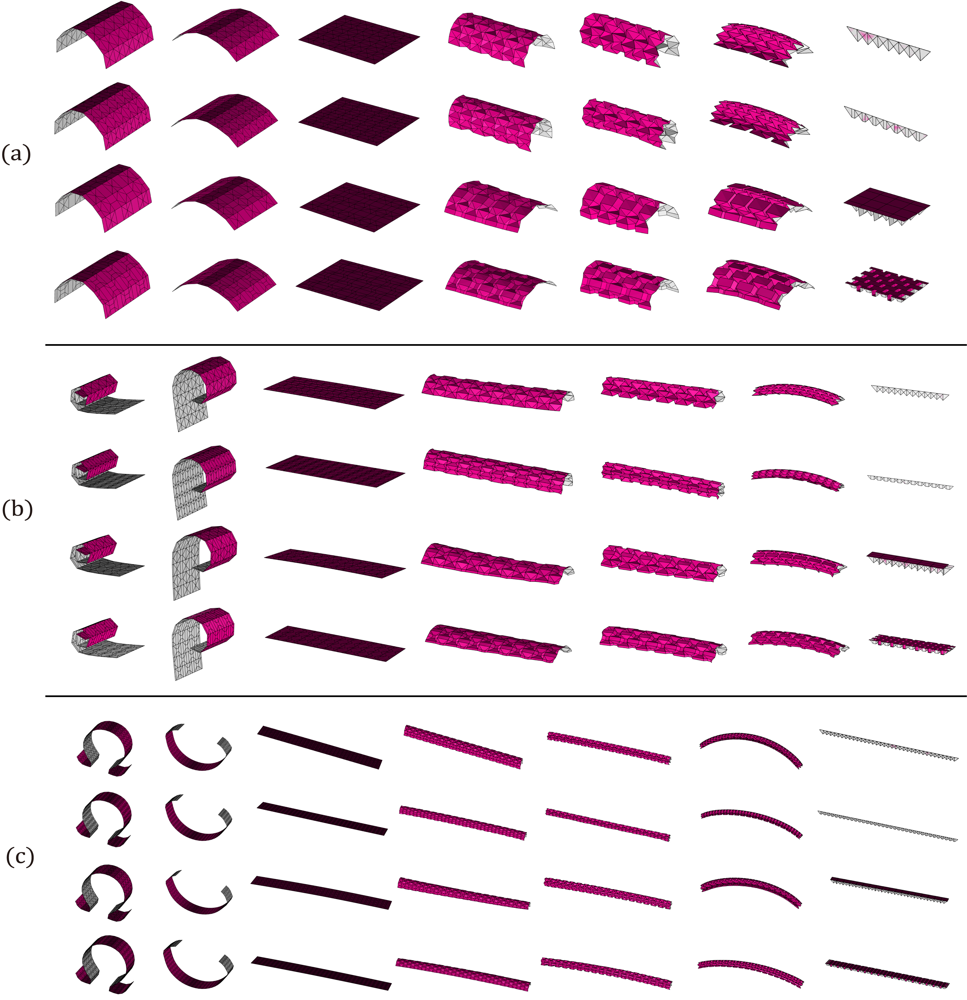

Constructing foldable cylindrical surfaces via unfolded waterbomb origami units
Yan Zhao*,1,
Yinglei Wei1, Yiyang Jia2, Shiling Li1, Mingyue Zhang1, Lanling Zeng1,
Yang Yang1,
and Jun Mitani3
1Jiangsu University
2Seikei University
3University of Tsukuba
Abstract:
Origami tessellations have shown the potential to be utilized for approximating curved target surfaces by folding a set of elemental units. As those units are in partially folded states, the origami approximation captures the outline of the target while demonstrating a corrugated surface. In this paper, we focus on the cylindrical surface and propose a method for constructing its discrete version via square or rectangular units with crease patterns inspired by the waterbomb tessellation.We unify the unit size through optimization to realize cost-efficient constructions. Three-dimensional curved structures are deployed by folding collinear creases between adjacent rows of units and the other creases in each row are remained unfolded. The deployed structure can still be folded to a compact state by folding all creases. To flexibly approximate the outline of the target surface, we analyse relationships between the width and height of the rectangular unit and utilize variations of the waterbomb tessellation to control the region of the origami structure when fully folded. The proposed method provides a novel solution to the so-called inverse-origami-design problem for generating foldable cylindrical surfaces using unfolded waterbomb origami units.
Resulting origami structures with units of case E for approximation

Resulting origami approximations with open profile curve

Resulting origami approximations with closed profile curve

Folding sequences of origami approximations

Publications:
- Yan Zhao*, Yinglei Wei, Yiyang Jia, Shiling Li, Mingyue Zhang, Lanling Zeng, Yang Yang and Jun Mitani:"Constructing foldable cylindrical surfaces via unfolded waterbomb origami units", Journal of Computational Design and Engineering.([DOI:https://doi.org/10.1093/jcde/qwac062])
BibTeX Citation
author = {Zhao, Yan and Wei, Yinglei and Jia, Yiyang and Li, Shiling and Zhang, Mingyue and Zeng, Lanling and Yang, Yang and Mitani, Jun},
title = "{Constructing foldable cylindrical surfaces via unfolded waterbomb origami units}",
journal = {Journal of Computational Design and Engineering},
volume = {9},
number = {4},
pages = {1498-1510},
year = {2022},
month = {07},
issn = {2288-5048},
doi = {10.1093/jcde/qwac062},
url = {https://doi.org/10.1093/jcde/qwac062},
}